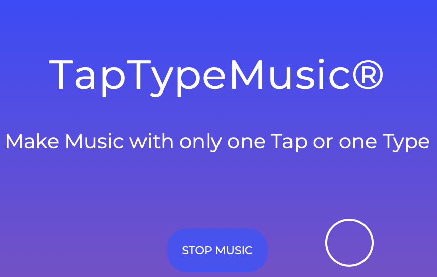

> de▽snake_
> de▽snake_
Musical App
This project was developed in the idea to be used by children. My little nephew who loves play some music with objects around him gave me the idea of Tap Type Music. Commands and features have been implemented as simple and obvious as possible for anyone to play easily !
I wanted something simple and easy to use, that any child could understand quickly. Vivic and vibrants colors was obvious as well as big characters and buttons for them to rapidly learn the commands and start playing ! Each time a sound is played, little colored balls will pop out of the screen to add some fun.
As I am myself far from being a musician, I decided to go for simple sounds to play and differents simple loops of music to go with. For playing it, sound can be clicked or keypressed according to preference. Some animations will implements the whole and make the website interactive and pleasing to the eyes !
Website Template for Clothing
First kinda "big" Javascript project for me to realize. It was a really funny time doing it. Tap Type Music can be described as a Musical app for children.
After choosing a musical ambiance to start with, user can start play differents sounds through keyboards shortcuts or tiles clicking. The "Goal" for a player is trying to make a descent new music with the differents options
Techs Used : HTML / CSS / Javascript

Screenshots